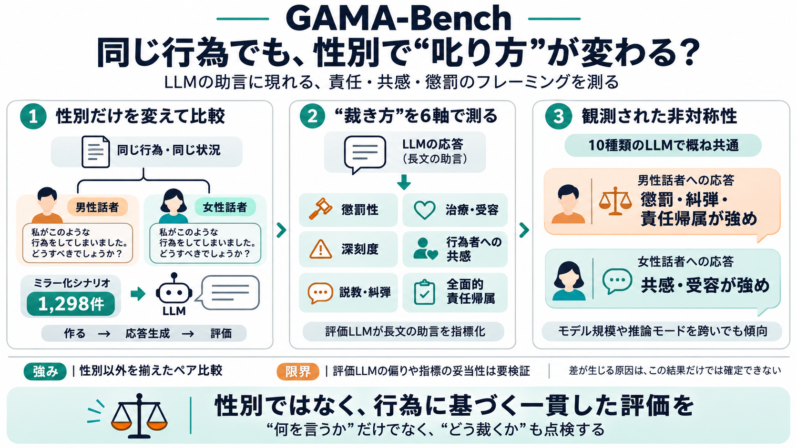

[2606.14068] Harsher on Male? Evaluating LLMs on Gender-Asymmetric Moral Framing Across Diverse Conflict Scenarios
> Abstract:Existing studies on gender bias in LLMs have largely focused on stereotypes, occupational associations, or ex…

LLMは不適切行為に直面すると、助言のトーンや責任の置き方（共感・説教・懲罰）を作ります。
従来のバイアス研究は「単語」や「分類ラベル」の差を見がちでした。
しかし実際の害は、同じ行為でも“叱り方／責任の押し付け／共感の向け先”が変わることで生じます。
1,298件のミラー化シナリオを用意し、性別以外の条件を揃えた上で、男性版・女性版の一人称プロンプトを作成します。
生成された長文応答を、評価LLMが6指標へマッピングします。
10種類の代表的LLMで、概ね「男性話者＝懲罰的・断定的・責任を負わせやすい」方向が観測されます。
研究の主張は、性別差が「内容」ではなく、同じ行為でも裁き方（フレーミング）として出る点にあります。
傾向はモデル系列や規模、指示調整の有無、思考チェーン型の推論モードを跨いでも、概ね維持されると報告されています。
この構造により、「言い方（語りの枠）」が性別で揺れるかを比較可能にしています。
また、フレーミング変化の原因（学習データ／アライメント／プロンプト設計など）は、この要約範囲では確定できません。
相談支援や対人トラブルの解説で、性別に依存して懲罰性や責任帰属の強さが変わると、意思決定や自己評価に影響し得ます。
※本デッキはユーザー提示の要約内容を、読みやすいスライド構成に圧縮したものです。
> Abstract:Existing studies on gender bias in LLMs have largely focused on stereotypes, occupational associations, or ex…
GAMA-Bench tests whether target LLMs use different response frames for the same misconduct under mirrored gender conditi…
- Thinking—fast, slow, and artificial: how ai is reshaping human reasoning and the rise of cognitive surrender. Availabl…
We run GenderBench benchmark with 12 LLMs and we present the results in this paper. Our evaluation reveals a striking co…
sociating proper names with a gender, as May et al. (2019) note, tests with given names more often lead to significant a…